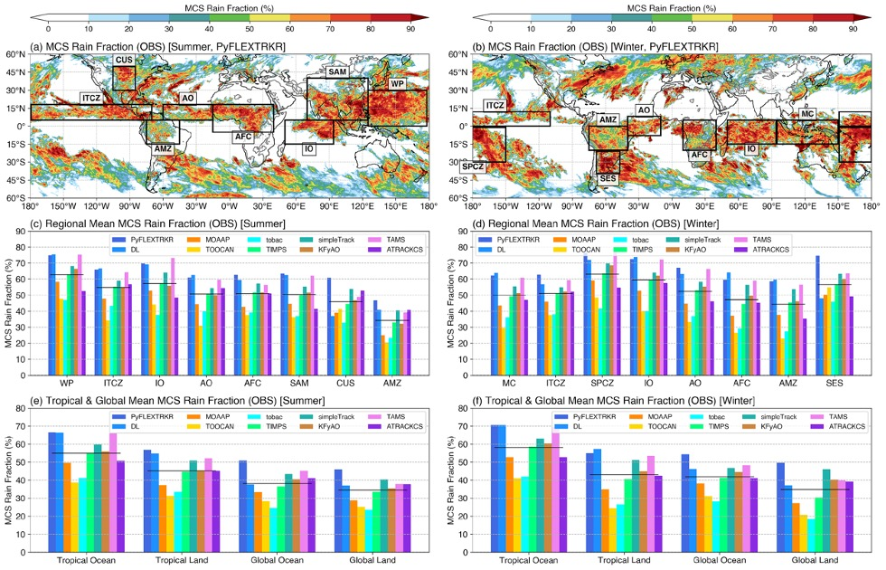

  Mesoscale convective systems (MCSs) are large complexes of convective clouds that span over hundreds of meters to kilometers.


<p style="text-align:center;"></p>


<p align="justify">
 
  
</p>

<!-- Main Section -->
<section>
  <h1>Project goals</h1>

This intercomparison project is..

The goal of this project are ...


<p align="justify">


